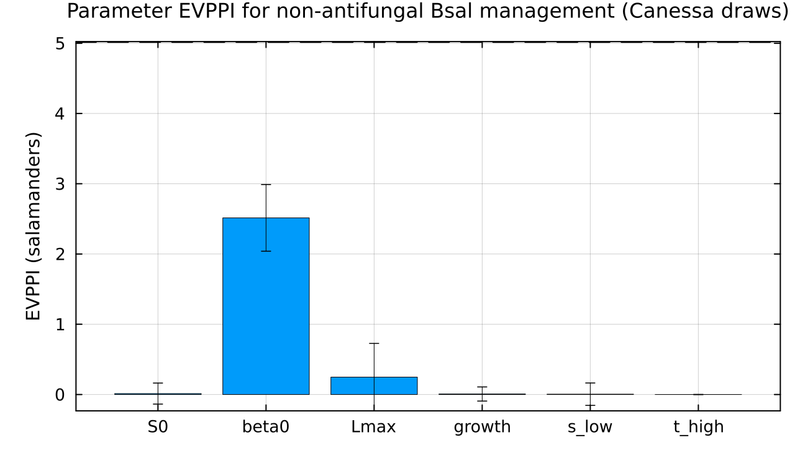
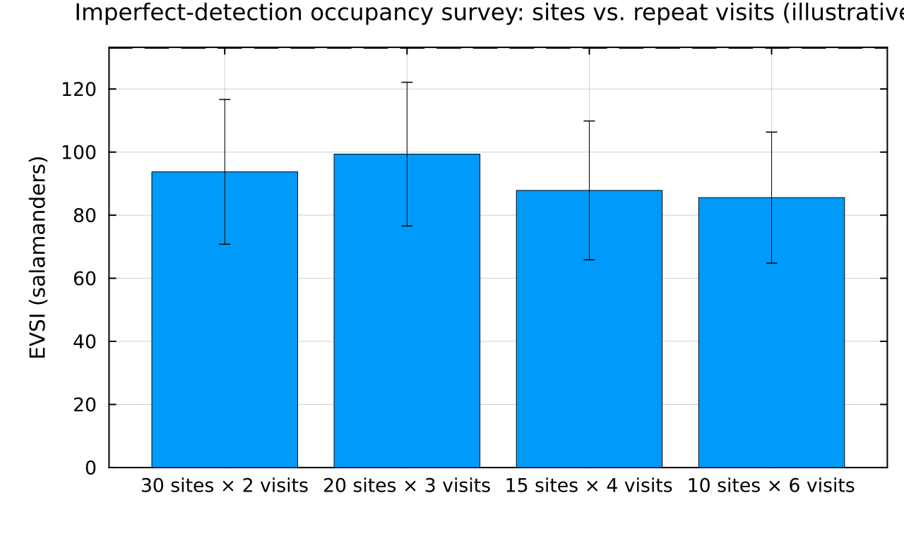

Mitigating Bsal invasion in fire salamanders under expert uncertainty and imperfect detection
Simon Frost
- About this case study
- Running the 8-action ensemble
- Decision rules and stochastic dominance
- Risk aversion and certainty-equivalent VOI
- Parameter EVPPI with GAM diagnostics
- Scenario discovery: when does 90% pre-emptive thinning achieve $R_0 < 1$?
- Deep uncertainty across initial density regimes
- Imperfect-detection surveillance: sites versus repeat visits (
OccupancyStudy)
About this case study
Batrachochytrium salamandrivorans (Bsal) is an emerging chytrid fungus causing rapid declines in European fire salamanders (Salamandra salamandra). Canessa et al. (2018, Journal of Applied Ecology 55:1987–1996, doi:10.1111/1365-2664.13089) built an integral projection model (IPM) over infection load and evaluated eight exploratory management actions across 1,000 parameter sets drawn from pooled expert elicitation (archived on Dryad, CC0, and shipped in Chytridiomycosis.jl).
What is published and what is ours
- The model, actions and 1,000 parameter draws come directly from
Chytridiomycosis.jl(load_canessa2018(),canessa_actions(),canessa_ensemble()), using a 120-cell midpoint mesh on $[-10, 15]$ so the full 8,000-run ensemble executes in seconds while reproducing the published medians closely. - The decision analysis — susceptible salamanders remaining on the 0.475-ha Stegen transect after 90 days, stochastic dominance, risk-averse certainty-equivalent VOI, parameter EVPPI with GAM diagnostics, PRIM scenario discovery for eradication ($R_0 < 1$), credal-set robustness across density regimes, and imperfect-detection swabbing (
OccupancyStudy) — is ours and illustrative. Every utility is counted in salamanders (or dimensionless ratios), with no invented monetary prices; action:a(No action) is thebaseline.
Running the 8-action ensemble
using DecisionAnalysis
using Chytridiomycosis: CANESSA_ACTION_NAMES, canessa_actions, canessa_ensemble,
load_canessa2018
using GAM: GAM
using Random: Xoshiro
using Statistics: mean, median, quantile
include(joinpath("..", "_common.jl"))
draws = load_canessa2018()
actions_spec = canessa_actions()
action_names = [a.name for a in actions_spec]
action_labels_str = Dict(a.name => a.label for a in actions_spec)
# Run the IPM for every action over all 1,000 expert-elicited draws.
mesh = (-10.0, 15.0, 120)
ensembles = [canessa_ensemble(a; draws, mesh) for a in actions_spec]
n_draws = length(draws)
transect_ha = 0.475
# Uninfected, unmanaged baseline survivors on the 0.475-ha Stegen transect at day 90.
s_free = [d.S0 * transect_ha * d.survival[1]^30 for d in draws]
Q_ratio = zeros(length(actions_spec), n_draws)
Q_surv = zeros(length(actions_spec), n_draws)
R0_mat = zeros(length(actions_spec), n_draws)
for (ai, ens) in enumerate(ensembles), j in 1:n_draws
Q_ratio[ai, j] = ens[j].ratio
Q_surv[ai, j] = ens[j].ratio * s_free[j]
R0_mat[ai, j] = ens[j].R0
end
belief = SampleBelief((;
S0=[d.S0 for d in draws],
beta0=[d.β0 for d in draws],
Lmax=[d.Lmax for d in draws],
growth=[d.growth for d in draws],
s_low=[d.survival[2] for d in draws],
t_high=[d.transmission[5] for d in draws],
))
prob_surv = DecisionProblem(PayoffTable(Q_surv; actions=action_names), belief; baseline=:a)
prob_ratio = DecisionProblem(PayoffTable(Q_ratio; actions=action_names), belief; baseline=:a)
md_table(["action", "description", "E[survivors]", "gain vs `:a`", "median ratio",
"P(R0 < 1)"],
[[a.name, a.label, mean(Q_surv[i, :]),
mean(Q_surv[i, :]) - mean(Q_surv[1, :]),
median(Q_ratio[i, :]), mean(R0_mat[i, :] .< 1.0)]
for (i, a) in enumerate(actions_spec)]; digits=3)| action | description | E[survivors] | gain vs :a | median ratio | P(R0 \< 1) |
|---|---|---|---|---|---|
a | No action | 4.598 | 0 | 0.013 | 0 |
b | Improve body condition | 5.639 | 1.04 | 0.016 | 0 |
c | Probiotic treatment | 4.388 | -0.21 | 0.012 | 0 |
d | Antifungal, 100% coverage | 205.404 | 200.806 | 1 | 1 |
e | Antifungal, 80% coverage | 186.797 | 182.199 | 0.951 | 0.003 |
f | Pre-emptive thinning 50% | 21.548 | 16.95 | 0.081 | 0 |
g | Pre-emptive thinning 90% | 19.806 | 15.208 | 0.097 | 0.591 |
h | Post-detection removal | 0 | -4.598 | 0 | 1 |
Full-coverage antifungal treatment (:d) preserves the largest expected number of susceptible adults on the transect, followed by 80%-coverage antifungal treatment (:e) and 50% pre-emptive thinning (:f). Aggressive 90% pre-emptive thinning (:g) reduces $R_0$ below 1 in over half of draws, yet removes so many healthy hosts beforehand that fewer susceptible adults remain at day 90 than under antifungal treatment.
Decision rules and stochastic dominance
Even without specifying a single risk-aversion parameter, first- and second-order stochastic dominance prune actions that no monotone (or risk-averse) manager would ever prefer.
eu_res = decide(prob_surv, MaxExpectedUtility())
reg_res = decide(prob_surv, MinimaxRegret())
cvar_res = decide(prob_surv, DecisionRule(CVaR(0.10)))
fsd_res = decide(prob_surv, StochasticDominance(; order=1))
ssd_res = decide(prob_surv, StochasticDominance(; order=2))
md_table(["rule", "chosen action(s)"],
[["MaxExpectedUtility", eu_res.chosen],
["MinimaxRegret", reg_res.chosen],
["CVaR(0.10)", cvar_res.chosen],
["First-order stochastic dominance (FSD)", fsd_res.chosen],
["Second-order stochastic dominance (SSD)", ssd_res.chosen]])| rule | chosen action(s) |
|---|---|
| MaxExpectedUtility | d |
| MinimaxRegret | d |
| CVaR(0.10) | d |
| First-order stochastic dominance (FSD) | d |
| Second-order stochastic dominance (SSD) | d |
Because full-coverage antifungal treatment (:d) is often infeasible in field habitats, the practical management choice usually sits among the feasible field actions excluding :d (actions :a, :b, :c, :e, :f, :g, :h).
field_actions = [:a, :b, :c, :e, :f, :g, :h]
prob_field = DecisionProblem(prob_surv.payoff, belief; feasible=field_actions, baseline=:a)
md_table(["rule (feasible field actions)", "chosen action(s)"],
[["MaxExpectedUtility", decide(prob_field, MaxExpectedUtility()).chosen],
["MinimaxRegret", decide(prob_field, MinimaxRegret()).chosen],
["CVaR(0.10)", decide(prob_field, DecisionRule(CVaR(0.10))).chosen],
["FSD undominated", decide(prob_field, StochasticDominance(; order=1)).chosen],
["SSD undominated", decide(prob_field, StochasticDominance(; order=2)).chosen]])| rule (feasible field actions) | chosen action(s) |
|---|---|
| MaxExpectedUtility | e |
| MinimaxRegret | e |
| CVaR(0.10) | e |
| FSD undominated | e |
| SSD undominated | e |
Risk aversion and certainty-equivalent VOI
When antifungal treatment is unavailable or infeasible at landscape scale, managers must choose among the non-antifungal field options: no action (:a), improving body condition (:b), 50% pre-emptive thinning (:f), or 90% pre-emptive thinning (:g). Across the 1,000 Dryad draws, :f and :g genuinely trade off depending on transmission and survival parameters. Under risk aversion (ExponentialUtility, PowerUtility), ce_evpi reports the value of resolving parameter uncertainty in salamanders rather than utiles.
prob_nonaf = DecisionProblem(prob_surv.payoff, belief; feasible=[:a, :b, :f, :g],
baseline=:a)
u_lin = LinearUtility(:survivors)
u_cara = ExponentialUtility(:survivors; risk_aversion=0.03)
u_crra = PowerUtility(:survivors; risk_aversion=0.5)
ce_lin = ce_evpi(prob_nonaf, u_lin)
ce_cara = ce_evpi(prob_nonaf, u_cara)
ce_crra = ce_evpi(prob_nonaf, u_crra)
md_table(["utility", "act-now CE (adults)", "informed CE (adults)",
"CE-EVPI (adults)"],
[["Linear (risk neutral)", ce_lin.act_now_ce, ce_lin.informed_ce, ce_lin.value],
["ExponentialUtility (r = 0.03)", ce_cara.act_now_ce, ce_cara.informed_ce,
ce_cara.value],
["PowerUtility (ρ = 0.5)", ce_crra.act_now_ce, ce_crra.informed_ce,
ce_crra.value]]; digits=3)| utility | act-now CE (adults) | informed CE (adults) | CE-EVPI (adults) |
|---|---|---|---|
| Linear (risk neutral) | 21.548 | 26.571 | 5.023 |
| ExponentialUtility (r = 0.03) | 19.344 | 23.927 | 4.583 |
| PowerUtility (ρ = 0.5) | 19.41 | 24.935 | 5.172 |
Parameter EVPPI with GAM diagnostics
Which of the six elicited biological parameters drives the choice between :f (50% thinning) and :g (90% thinning) in the non-antifungal decision problem? Here we compare standard GAMRegression() (with edf diagnostics surfaced from GAM.jl) against chunked GAMRegression(; backend=:bam).
evpi_tr = evpi(prob_nonaf, SampleAverage())
params = [:S0, :beta0, :Lmax, :growth, :s_low, :t_high]
gam_fits = [evppi(prob_nonaf, p, GAMRegression()) for p in params]
bam_fits = [evppi(prob_nonaf, p, GAMRegression(; backend=:bam)) for p in params]
md_table(["parameter", "GAM EVPPI", "SE", "GAM EDF (mean)", "BAM EVPPI"],
[[p, g.value, g.standard_error, mean(g.details.edf), b.value]
for (p, g, b) in zip(params, gam_fits, bam_fits)]; digits=3)| parameter | GAM EVPPI | SE | GAM EDF (mean) | BAM EVPPI |
|---|---|---|---|---|
S0 | 0.013 | 0.076 | 3.551 | 0.008 |
beta0 | 2.514 | 0.242 | 9.442 | 2.5 |
Lmax | 0.247 | 0.245 | 2.142 | 0.253 |
growth | 0.007 | 0.051 | 2.229 | 0.013 |
s_low | 0.005 | 0.081 | 4.553 | 0 |
t_high | 0 | 0 | 2 | 0 |
plt = Plots.bar(String.(params), [g.value for g in gam_fits];
yerror=[1.96 * g.standard_error for g in gam_fits],
legend=false, linewidth=0.5,
ylabel="EVPPI (salamanders)",
title="Parameter EVPPI for non-antifungal Bsal management (Canessa draws)")
Plots.hline!(plt, [evpi_tr.value]; linestyle=:dash, color=:black,
label="Sample EVPI")
png_figure(plt)
Scenario discovery: when does 90% pre-emptive thinning achieve $R_0 < 1$?
prim_boxes searches the 6-dimensional elicited parameter space for interpretable axis-aligned boxes in which :g (90% pre-emptive thinning, overall eradication rate 59.1%) keeps $R_0 < 1$.
erad_g = R0_mat[7, :] .< 1.0
prim = prim_boxes(belief, erad_g; peel_alpha=0.05, min_mass=0.10)
top_boxes = prim.frontier[1:min(4, length(prim.frontier))]
md_table(["box", "density P(R0 < 1)", "coverage", "mass", "restricted dimensions"],
[[i, b.density, b.coverage, b.mass,
join(["$(k) ∈ [$(round(lo; digits=2)), $(round(hi; digits=2))]"
for (k, (lo, hi)) in pairs(b.bounds)], "; ")]
for (i, b) in enumerate(top_boxes)]; digits=3)| box | density P(R0 \< 1) | coverage | mass | restricted dimensions |
|---|---|---|---|---|
| 1 | 0.591 | 1 | 1 | growth ∈ [13.62, 93.47]; slow ∈ [0.95, 0.99]; beta0 ∈ [0.0, 0.02]; Lmax ∈ [5390.59, 18535.98]; thigh ∈ [0.91, 1.0]; S0 ∈ [204.21, 993.68] |
| 2 | 0.611 | 0.981 | 0.949 | growth ∈ [13.62, 93.47]; slow ∈ [0.95, 0.99]; beta0 ∈ [0.0, 0.01]; Lmax ∈ [5390.59, 18535.98]; thigh ∈ [0.91, 1.0]; S0 ∈ [204.21, 993.68] |
| 3 | 0.624 | 0.951 | 0.901 | growth ∈ [13.62, 93.47]; slow ∈ [0.95, 0.99]; beta0 ∈ [0.0, 0.01]; Lmax ∈ [5390.59, 18535.98]; thigh ∈ [0.91, 1.0]; S0 ∈ [204.21, 993.68] |
| 4 | 0.644 | 0.932 | 0.855 | growth ∈ [13.62, 93.47]; slow ∈ [0.95, 0.99]; beta0 ∈ [0.0, 0.01]; Lmax ∈ [5390.59, 18535.98]; thigh ∈ [0.91, 1.0]; S0 ∈ [204.21, 993.68] |
Deep uncertainty across initial density regimes
Expert beliefs about pre-invasion host density S0 can differ sharply across valleys. Splitting the 1,000 draws into three density strata (low, medium, high S0) builds a three-prior CredalSet over those regimes; prune_generators removes a redundant interior mixture [1/3, 1/3, 1/3], and SmoothAmbiguity interpolates between risk-neutral averaging and GammaMaximin.
q33, q67 = quantile([d.S0 for d in draws], (1 / 3, 2 / 3))
strata = [d.S0 <= q33 ? 1 : (d.S0 <= q67 ? 2 : 3) for d in draws]
nonaf_idx = [1, 2, 6, 7]
Q_strata = [mean(Q_surv[nonaf_idx[a], strata .== s]) for a in 1:4, s in 1:3]
pay_strata = PayoffTable([:a, :b, :f, :g], [:low_S0, :mid_S0, :high_S0], Q_strata)
# Credal set with an interior mixture included to illustrate pruning.
cred_raw = CredalSet([:low_S0, :mid_S0, :high_S0],
[[0.7, 0.2, 0.1], [0.2, 0.6, 0.2], [0.1, 0.2, 0.7],
[1 / 3, 1 / 3, 1 / 3]])
cred = prune_generators(cred_raw)
prob_cred = DecisionProblem(pay_strata, cred; baseline=:a)
rob_pi = robust_evpi(prob_cred)
md_table(["quantity / rule", "result"],
[["generators before -> after prune_generators",
"$(length(extreme_points(cred_raw))) -> $(length(extreme_points(cred)))"],
["EAdmissible", decide(prob_cred, EAdmissible()).chosen],
["GammaMaximin", decide(prob_cred, GammaMaximin()).chosen],
["SmoothAmbiguity(η = 0.05)",
decide(prob_cred, DecisionRule(SmoothAmbiguity(0.05))).chosen],
["robust_evpi (lower, upper)",
"$(round(rob_pi.lower; digits=2)), $(round(rob_pi.upper; digits=2))"]])| quantity / rule | result |
|---|---|
| generators before -\> after prune_generators | 4 -\> 3 |
| EAdmissible | f |
| GammaMaximin | f |
| SmoothAmbiguity(η = 0.05) | f |
| robust_evpi (lower, upper) | 0.0, 0.0 |
Imperfect-detection surveillance: sites versus repeat visits (OccupancyStudy)
Before committing regional resources across a network of 40 salamander ponds, managers can run skin-swabbing occupancy surveys (OccupancyStudy) under imperfect detection (MacKenzie et al. 2002). With a fixed budget of 60 total pond-visits (illustrative), is it more informative to visit more sites fewer times ($30 \times 2$) or fewer sites more times ($15 \times 4$, $10 \times 6$)?
rng = Xoshiro(202636)
n_occ = 1200
# Illustrative prior over regional Bsal site occupancy ψ and per-visit swab detection p.
psi = 0.05 .+ 0.55 .* rand(rng, n_occ)
p_det = 0.20 .+ 0.60 .* rand(rng, n_occ)
# Acting regionally saves 40 * psi * 80 salamanders minus 1,200 handling-equivalent units.
Q_reg = vcat(zeros(1, n_occ), permutedims(40 .* psi .* 80 .- 1200.0))
prob_reg = DecisionProblem(PayoffTable(Q_reg; actions=[:wait, :regional_treatment]),
SampleBelief((; occupancy=psi, detection=p_det));
baseline=:wait)
designs = [(30, 2), (20, 3), (15, 4), (10, 6)]
occ_rows = map(designs) do (S, K)
st = OccupancyStudy(:occupancy, :detection; sites=S, visits=K)
est_is = evsi(prob_reg, ImportanceSampling(prob_reg, st; datasets=180, seed=11))
est_ss = evsi(prob_reg, SummaryStatistics(prob_reg, st; seed=11))
return ["$(S) sites × $(K) visits", est_is.value, est_is.standard_error,
est_is.details.median_pareto_k, est_ss.value]
end
md_table(["survey design (60 pond-visits)", "IS EVSI (salamanders)", "IS SE",
"median PSIS k̂", "SummaryStats EVSI"], occ_rows; digits=2)| survey design (60 pond-visits) | IS EVSI (salamanders) | IS SE | median PSIS k̂ | SummaryStats EVSI |
|---|---|---|---|---|
| 30 sites × 2 visits | 93.73 | 11.71 | -0.73 | 86.86 |
| 20 sites × 3 visits | 99.36 | 11.63 | -0.71 | 90.61 |
| 15 sites × 4 visits | 87.85 | 11.23 | -0.79 | 87.92 |
| 10 sites × 6 visits | 85.57 | 10.6 | -0.74 | 78.75 |
plt_occ = Plots.bar([r[1] for r in occ_rows], [Float64(r[2]) for r in occ_rows];
yerror=[1.96 * Float64(r[3]) for r in occ_rows],
legend=false, linewidth=0.5,
ylabel="EVSI (salamanders)",
title="Imperfect-detection occupancy survey: sites vs. repeat visits (illustrative)")
Plots.hline!(plt_occ, [evpi(prob_reg)]; linestyle=:dash, color=:black, label="EVPI")
png_figure(plt_occ)
All PSIS $\hat{k}$ tail diagnostics stay well below the $0.7$ reliability threshold, confirming stable importance weights across designs. Splitting 60 pond-visits across moderate repeat visits ($15 \times 4$ or $20 \times 3$) resolves occupancy uncertainty without collapsing detection identifiability.